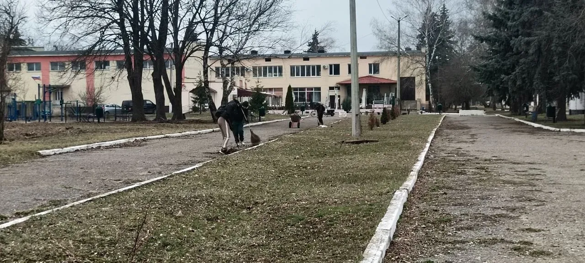
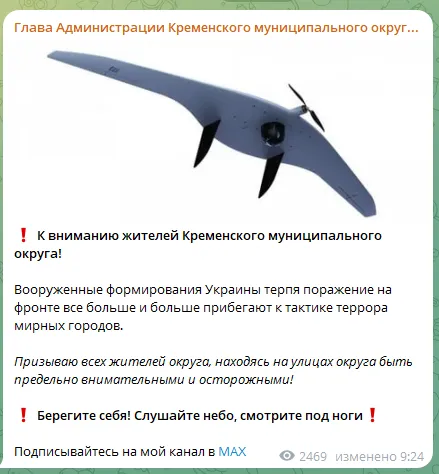
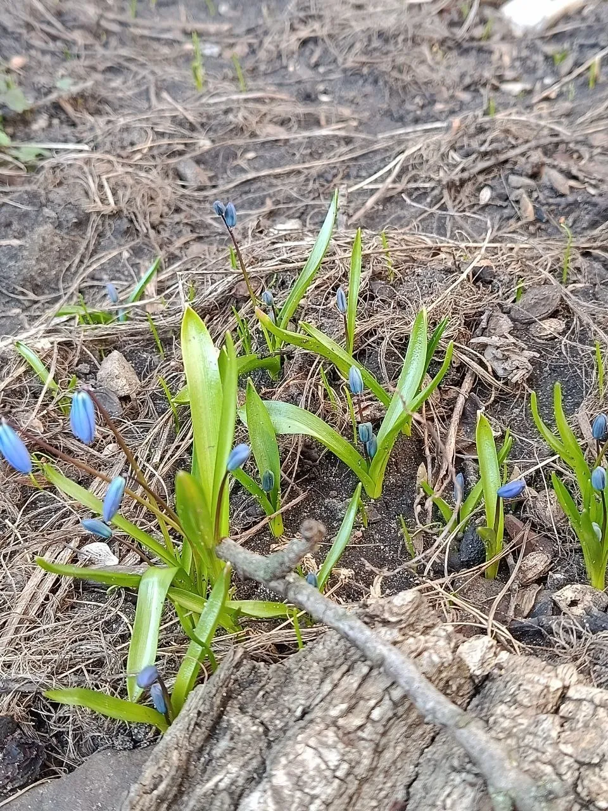

Кременная: как изменилась обстановка с конца марта по середину апреля 2026 года
Дата:

Если в конце марта в Кременной многие говорили, что стало тише, то к середине апреля ситуация снова изменилась. Сейчас город живёт в более напряжённом режиме, но характер угроз стал другим.
Раньше основное было — отдельные прилёты где-то в стороне. В целом люди отмечали, что стало спокойнее и даже непривычно тихо.
С начала апреля всё постепенно поменялось. Дроны начали появляться чаще, сначала точечно, а потом уже практически постоянно.
Что изменилось в небе
Главное отличие сейчас — это дроны. Их стало заметно больше.
Если раньше это были отдельные пролёты, то сейчас в некоторые дни их фиксируют десятками. Люди уже говорят, что их просто перестают считать.
15 апреля во второй половине дня был показательный момент — после улучшения погоды дронов стало резко больше, и их стало очень много по всему городу.

Опасности сейчас
Изменилась и сама опасность. Если раньше больше говорили про обстрелы, то сейчас основной риск — это дроны.
Фиксируются удары по машинам, повреждения техники, иногда попадают и по жилым домам. Сообщается также о сгоревшей «буханке» после удара.
Отдельная проблема — предметы, которые могут сбрасываться с дронов. Уже был случай, когда человек погиб после контакта с таким предметом.
Из-за этого любые поездки и даже просто нахождение на открытых участках стали более рискованными.
Как живёт город
Интересный момент — днём людей стало больше. С потеплением центр оживился, все стараются решить свои дела, пока есть возможность.
Но во второй половине дня картина совсем другая. Когда дронов становится больше, город быстро пустеет. Люди стараются лишний раз не выходить и не ездить.
Фактически появился такой режим: днём — движение, вечером — максимальная осторожность.
Связь, свет и дороги
Со светом ситуация разная: перебои бывают, но постепенно всё восстанавливают.
Самая большая проблема сейчас — связь. Мобильная работает плохо или не работает вообще, из-за этого сложно даже просто созвониться.
Дороги тоже остаются слабым местом. Их подсыпают, но после дождей всё быстро размывает.
Роль погоды

Погода напрямую влияет на обстановку. Когда дождь и пасмурно — дронов меньше. Когда становится ясно — их снова много.
Это хорошо видно по последним дням: как только погода улучшилась, активность резко выросла.
Итог
Если коротко, ситуация изменилась не в сторону постоянных обстрелов, а в сторону постоянного присутствия дронов.
Жить в городе можно, но рисков стало больше, особенно при передвижении.
Главное изменение — стало не громче, а опаснее за счёт дронов, которые теперь постоянно в небе.